ProgrTest lave linge JUMP Fr
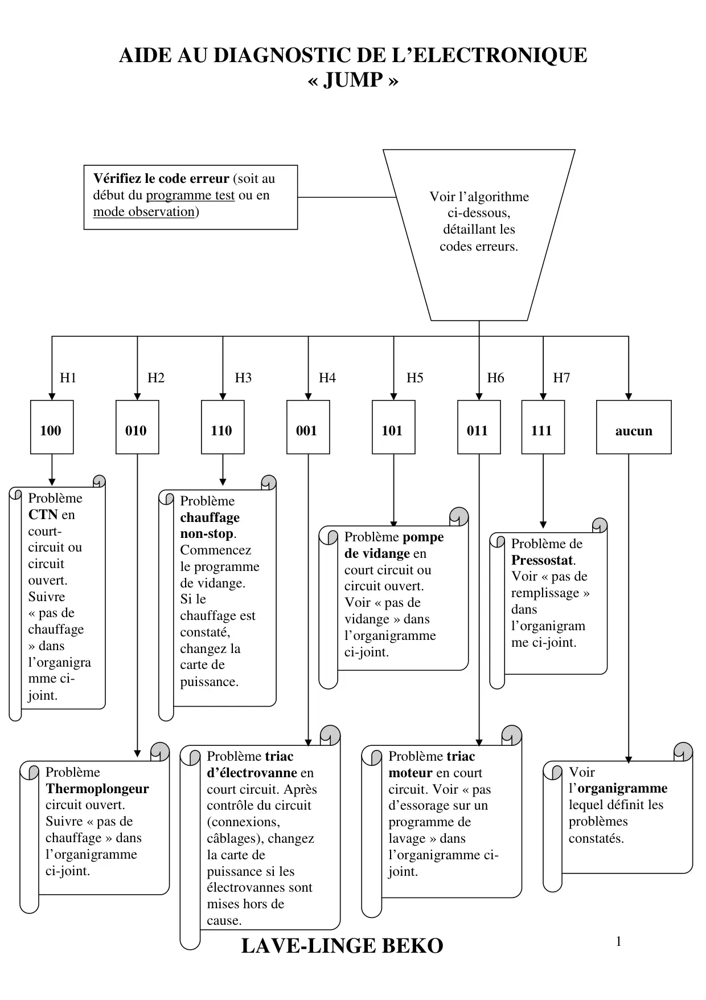
AIDE AU DIAGNOSTIC DE L’ELECTRONIQUE« JUMP »LAVE-LINGE BEKO1H1H2H3H4H5H6H7Vérifiez le code erreur (soit audébut du programme test ou enmode observation)100011111010110001101aucunProblèmeCTN encourt-circuit oucircuitouvert.Suivre« pas dechauffage» dansl’organigramme ci-joint.ProblèmeThermoplongeurcircuit ouvert.Suivre « pas dechauffage » dansl’organigrammeci-joint.Voir l’algorithmeci-dessous,détaillant lescodes erreurs.Problèmechauffagenon-stop.Commencezle programmede vidange.Si lechauffage estconstaté,changez lacarte depuissance.Problème triacd’électrovanne encourt circuit. Aprèscontrôle du circuit(connexions,câblages), changezla carte depuissance si lesélectrovannes sontmises hors decause.Problème triacmoteur en courtcircuit. Voir « pasd’essorage sur unprogramme delavage » dansl’organigramme ci-joint.Problème dePressostat.Voir « pas deremplissage »dansl’organigramme ci-joint.Problème pompede vidange encourt circuit oucircuit ouvert.Voir « pas devidange » dansl’organigrammeci-joint.Voirl’organigrammelequel définit lesproblèmesconstatés.
1 / 16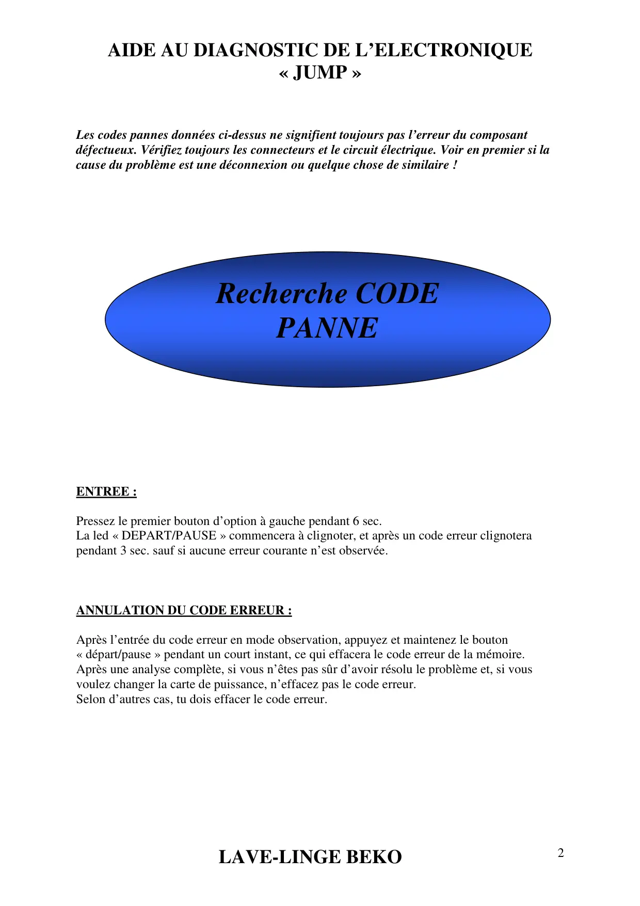
AIDE AU DIAGNOSTIC DE L’ELECTRONIQUE« JUMP »LAVE-LINGE BEKO2Les codes pannes données ci-dessus ne signifient toujours pas l’erreur du composantdéfectueux. Vérifiez toujours les connecteurs et le circuit électrique. Voir en premier si lacause du problème est une déconnexion ou quelque chose de similaire !ENTREE :Pressez le premier bouton d’option à gauche pendant 6 sec.La led « DEPART/PAUSE » commencera à clignoter, et après un code erreur clignoterapendant 3 sec. sauf si aucune erreur courante n’est observée.ANNULATION DU CODE ERREUR :Après l’entrée du code erreur en mode observation, appuyez et maintenez le bouton« départ/pause » pendant un court instant, ce qui effacera le code erreur de la mémoire.Après une analyse complète, si vous n’êtes pas sûr d’avoir résolu le problème et, si vousvoulez changer la carte de puissance, n’effacez pas le code erreur.Selon d’autres cas, tu dois effacer le code erreur.Recherche CODEPANNE
2 / 16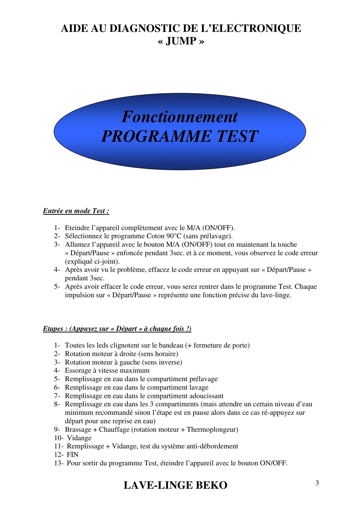
AIDE AU DIAGNOSTIC DE L’ELECTRONIQUE« JUMP »LAVE-LINGE BEKO3Entrée en mode Test :1- Eteindre l’appareil complètement avec le M/A (ON/OFF).2- Sélectionnez le programme Coton 90°C (sans prélavage).3- Allumez l’appareil avec le bouton M/A (ON/OFF) tout en maintenant la touche« Départ/Pause » enfoncée pendant 3sec. et à ce moment, vous observez le code erreur(expliqué ci-joint).4- Après avoir vu le problème, effacez le code erreur en appuyant sur « Départ/Pause »pendant 3sec.5- Après avoir effacer le code erreur, vous serez rentrer dans le programme Test. Chaqueimpulsion sur « Départ/Pause » représente une fonction précise du lave-linge.Etapes : (Appuyez sur « Départ » à chaque fois !)1- Toutes les leds clignotent sur le bandeau (+ fermeture de porte)2- Rotation moteur à droite (sens horaire)3- Rotation moteur à gauche (sens inverse)4- Essorage à vitesse maximum5- Remplissage en eau dans le compartiment prélavage6- Remplissage en eau dans le compartiment lavage7- Remplissage en eau dans le compartiment adoucissant8- Remplissage en eau dans les 3 compartiments (mais attendre un certain niveau d’eauminimum recommandé sinon l’étape est en pause alors dans ce cas ré-appuyez surdépart pour une reprise en eau)9- Brassage + Chauffage (rotation moteur + Thermoplongeur)10- Vidange11- Remplissage + Vidange, test du système anti-débordement12- FIN13- Pour sortir du programme Test, éteindre l’appareil avec le bouton ON/OFF.FonctionnementPROGRAMME TEST
3 / 16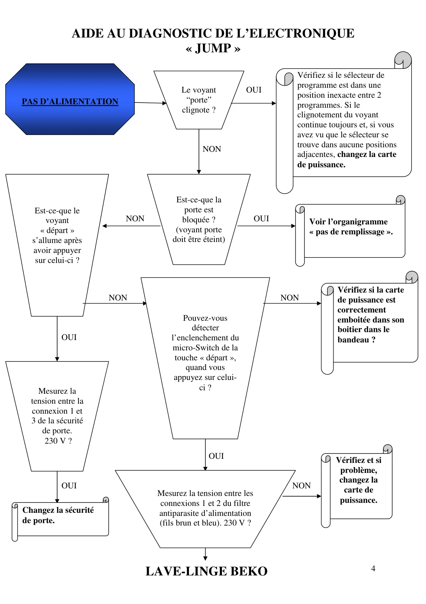
AIDE AU DIAGNOSTIC DE L’ELECTRONIQUE« JUMP »LAVE-LINGE BEKO4OUIOUINONNONNONOUINONNONNONOUIOUIOUIOUINONPAS D’ALIMENTATIONLe voyant“porte”clignote ?Vérifiez si le sélecteur deprogramme est dans uneposition inexacte entre 2programmes. Si leclignotement du voyantcontinue toujours et, si vousavez vu que le sélecteur setrouve dans aucune positionsadjacentes, changez la cartede puissance.Est-ce-que laporte estbloquée ?(voyant portedoit être éteint)Voir l’organigramme« pas de remplissage ».Est-ce-que levoyant« départ »s’allume aprèsavoir appuyersur celui-ci ?Pouvez-vousdétecterl’enclenchement dumicro-Switch de latouche « départ »,quand vousappuyez sur celui-ci ?Vérifiez si la cartede puissance estcorrectementemboitée dans sonboitier dans lebandeau ?Mesurez latension entre laconnexion 1 et3 de la sécuritéde porte.230 V ?Changez la sécuritéde porte.Mesurez la tension entre lesconnexions 1 et 2 du filtreantiparasite d’alimentation(fils brun et bleu). 230 V ?Vérifiez et siproblème,changez lacarte depuissance.
4 / 16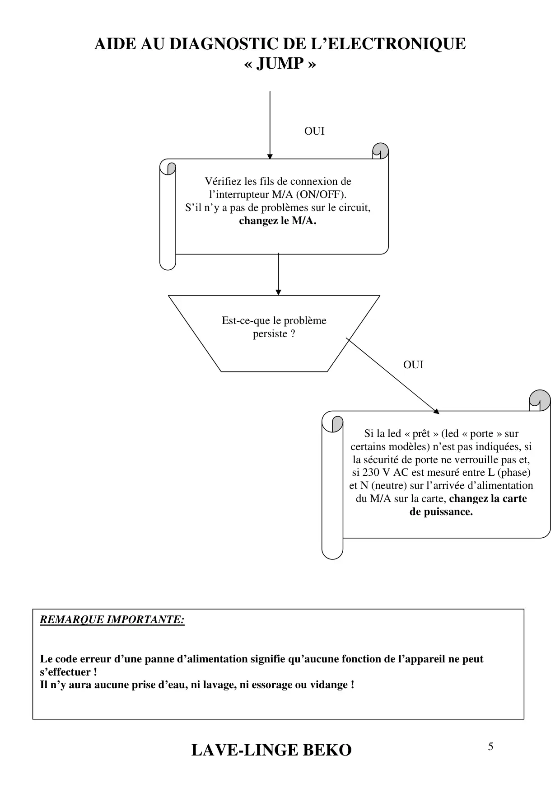
AIDE AU DIAGNOSTIC DE L’ELECTRONIQUE« JUMP »LAVE-LINGE BEKO5OUIOUIVérifiez les fils de connexion del’interrupteur M/A (ON/OFF).S’il n’y a pas de problèmes sur le circuit,changez le M/A.REMARQUE IMPORTANTE:Le code erreur d’une panne d’alimentation signifie qu’aucune fonction de l’appareil ne peuts’effectuer !Il n’y aura aucune prise d’eau, ni lavage, ni essorage ou vidange !Est-ce-que le problèmepersiste ?Si la led « prêt » (led « porte » surcertains modèles) n’est pas indiquées, sila sécurité de porte ne verrouille pas et,si 230 V AC est mesuré entre L (phase)et N (neutre) sur l’arrivée d’alimentationdu M/A sur la carte, changez la cartede puissance.
5 / 16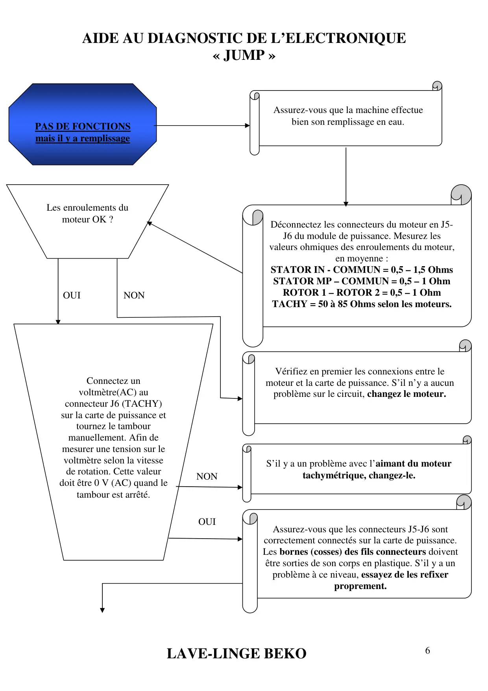
AIDE AU DIAGNOSTIC DE L’ELECTRONIQUE« JUMP »LAVE-LINGE BEKO6OUINONNONNONOUIOUIPAS DE FONCTIONSmais il y a remplissageAssurez-vous que la machine effectuebien son remplissage en eau.Déconnectez les connecteurs du moteur en J5-J6 du module de puissance. Mesurez lesvaleurs ohmiques des enroulements du moteur,en moyenne :STATOR IN - COMMUN = 0,5 – 1,5 OhmsSTATOR MP – COMMUN = 0,5 – 1 OhmROTOR 1 – ROTOR 2 = 0,5 – 1 OhmTACHY = 50 à 85 Ohms selon les moteurs.Les enroulements dumoteur OK ?Vérifiez en premier les connexions entre lemoteur et la carte de puissance. S’il n’y a aucunproblème sur le circuit, changez le moteur.Connectez unvoltmètre(AC) auconnecteur J6 (TACHY)sur la carte de puissance ettournez le tambourmanuellement. Afin demesurer une tension sur levoltmètre selon la vitessede rotation. Cette valeurdoit être 0 V (AC) quand letambour est arrêté.S’il y a un problème avec l’aimant du moteurtachymétrique, changez-le.Assurez-vous que les connecteurs J5-J6 sontcorrectement connectés sur la carte de puissance.Les bornes (cosses) des fils connecteurs doiventêtre sorties de son corps en plastique. S’il y a unproblème à ce niveau, essayez de les refixerproprement.
6 / 16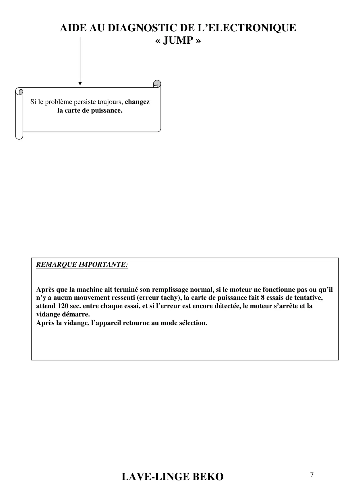
AIDE AU DIAGNOSTIC DE L’ELECTRONIQUE« JUMP »LAVE-LINGE BEKO7Si le problème persiste toujours, changezla carte de puissance.REMARQUE IMPORTANTE:Après que la machine ait terminé son remplissage normal, si le moteur ne fonctionne pas ou qu’iln’y a aucun mouvement ressenti (erreur tachy), la carte de puissance fait 8 essais de tentative,attend 120 sec. entre chaque essai, et si l’erreur est encore détectée, le moteur s’arrête et lavidange démarre.Après la vidange, l’appareil retourne au mode sélection.
7 / 16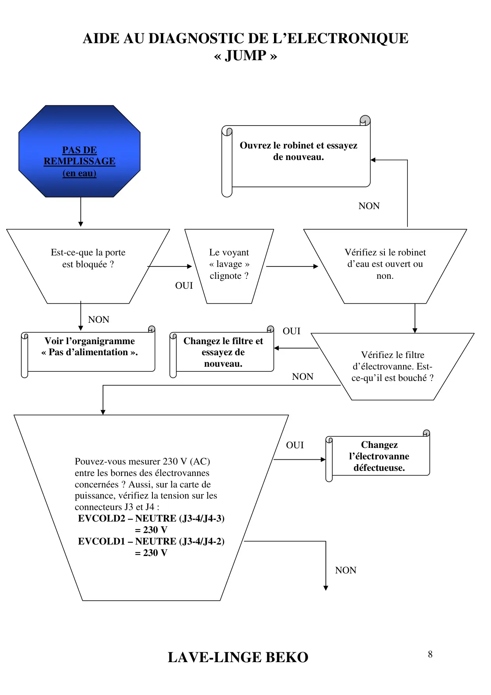
AIDE AU DIAGNOSTIC DE L’ELECTRONIQUE« JUMP »LAVE-LINGE BEKO8NONOUIOUINONOUINONOUIOUINONPAS DEREMPLISSAGE(en eau)Est-ce-que la porteest bloquée ?Voir l’organigramme« Pas d’alimentation ».Le voyant« lavage »clignote ?Vérifiez si le robinetd’eau est ouvert ounon.Ouvrez le robinet et essayezde nouveau.Vérifiez le filtred’électrovanne. Est-ce-qu’il est bouché ?Changez le filtre etessayez denouveau.Pouvez-vous mesurer 230 V (AC)entre les bornes des électrovannesconcernées ? Aussi, sur la carte depuissance, vérifiez la tension sur lesconnecteurs J3 et J4 :EVCOLD2 – NEUTRE (J3-4/J4-3)= 230 VEVCOLD1 – NEUTRE (J3-4/J4-2)= 230 VChangezl’électrovannedéfectueuse.
8 / 16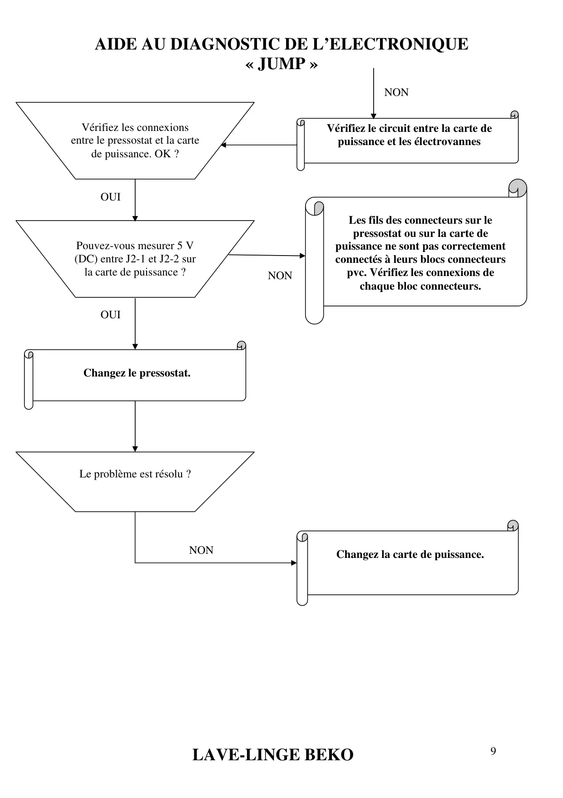
AIDE AU DIAGNOSTIC DE L’ELECTRONIQUE« JUMP »LAVE-LINGE BEKO9NONOUINONOUINONVérifiez le circuit entre la carte depuissance et les électrovannesVérifiez les connexionsentre le pressostat et la cartede puissance. OK ?Pouvez-vous mesurer 5 V(DC) entre J2-1 et J2-2 surla carte de puissance ?Les fils des connecteurs sur lepressostat ou sur la carte depuissance ne sont pas correctementconnectés à leurs blocs connecteurspvc. Vérifiez les connexions dechaque bloc connecteurs.Changez le pressostat.Le problème est résolu ?Changez la carte de puissance.
9 / 16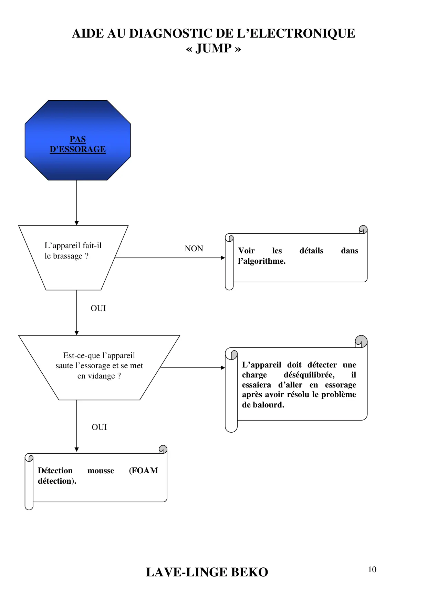
AIDE AU DIAGNOSTIC DE L’ELECTRONIQUE« JUMP »LAVE-LINGE BEKO10NONOUIOUIPASD’ESSORAGEL’appareil fait-ille brassage ?Voirlesdétailsdansl’algorithme.Est-ce-que l’appareilsaute l’essorage et se meten vidange ?Détectionmousse(FOAMdétection).L’appareil doit détecter unechargedéséquilibrée,ilessaiera d’aller en essorageaprès avoir résolu le problèmede balourd.
10 / 16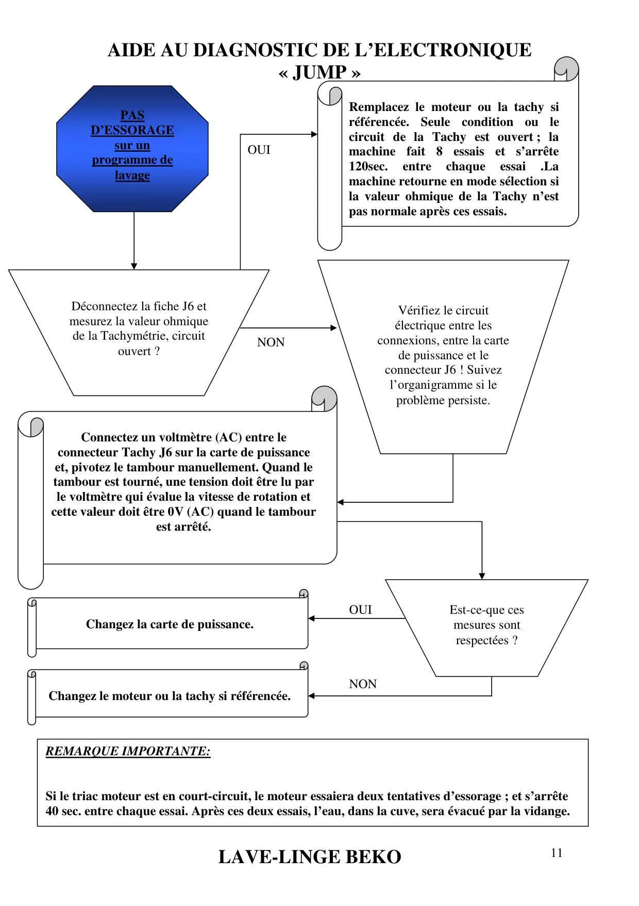
AIDE AU DIAGNOSTIC DE L’ELECTRONIQUE« JUMP »LAVE-LINGE BEKO11OUINONOUINONPASD’ESSORAGEsur unprogramme delavageDéconnectez la fiche J6 etmesurez la valeur ohmiquede la Tachymétrie, circuitouvert ?Remplacez le moteur ou la tachy siréférencée. Seule condition ou lecircuit de la Tachy est ouvert ; lamachine fait 8 essais et s’arrête120sec.entrechaqueessai.Lamachine retourne en mode sélection sila valeur ohmique de la Tachy n’estpas normale après ces essais.Vérifiez le circuitélectrique entre lesconnexions, entre la cartede puissance et leconnecteur J6 ! Suivezl’organigramme si leproblème persiste.Connectez un voltmètre (AC) entre leconnecteur Tachy J6 sur la carte de puissanceet, pivotez le tambour manuellement. Quand letambour est tourné, une tension doit être lu parle voltmètre qui évalue la vitesse de rotation etcette valeur doit être 0V (AC) quand le tambourest arrêté.Est-ce-que cesmesures sontrespectées ?Changez la carte de puissance.Changez le moteur ou la tachy si référencée.REMARQUE IMPORTANTE:Si le triac moteur est en court-circuit, le moteur essaiera deux tentatives d’essorage ; et s’arrête40 sec. entre chaque essai. Après ces deux essais, l’eau, dans la cuve, sera évacué par la vidange.
11 / 16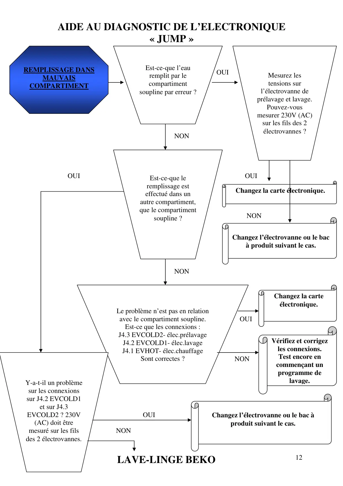
AIDE AU DIAGNOSTIC DE L’ELECTRONIQUE« JUMP »LAVE-LINGE BEKO12OUINONOUIOUINONNONOUINONOUINONREMPLISSAGE DANSMAUVAISCOMPARTIMENTEst-ce-que l’eauremplit par lecompartimentsoupline par erreur ?Mesurez lestensions surl’électrovanne deprélavage et lavage.Pouvez-vousmesurer 230V (AC)sur les fils des 2électrovannes ?Changez la carte électronique.Changez l’électrovanne ou le bacà produit suivant le cas.Est-ce-que leremplissage esteffectué dans unautre compartiment,que le compartimentsoupline ?Le problème n’est pas en relationavec le compartiment soupline.Est-ce que les connexions :J4.3 EVCOLD2- élec.prélavageJ4.2 EVCOLD1- élec.lavageJ4.1 EVHOT- élec.chauffageSont correctes ?Changez la carteélectronique.Vérifiez et corrigezles connexions.Test encore encommençant unprogramme delavage.Y-a-t-il un problèmesur les connexionssur J4.2 EVCOLD1et sur J4.3EVCOLD2 ? 230V(AC) doit êtremesuré sur les filsdes 2 électrovannes.Changez l’électrovanne ou le bac àproduit suivant le cas.
12 / 16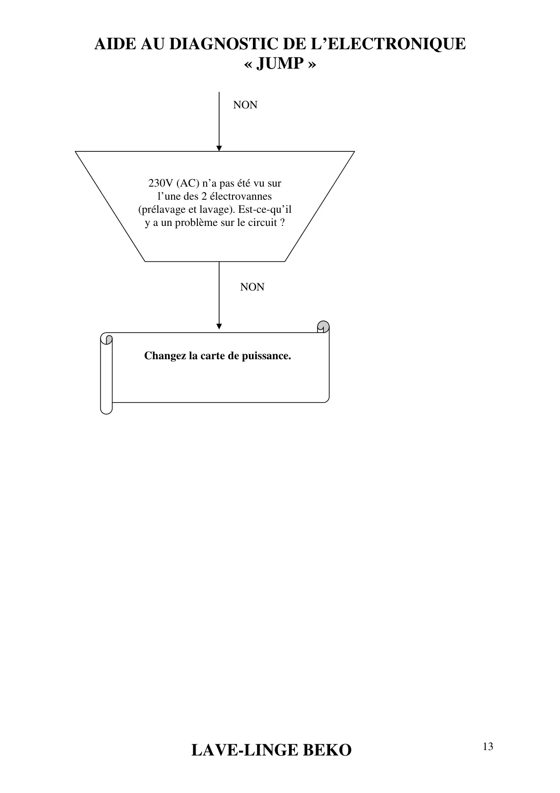
AIDE AU DIAGNOSTIC DE L’ELECTRONIQUE« JUMP »LAVE-LINGE BEKO13NONNON230V (AC) n’a pas été vu surl’une des 2 électrovannes(prélavage et lavage). Est-ce-qu’ily a un problème sur le circuit ?Changez la carte de puissance.
13 / 16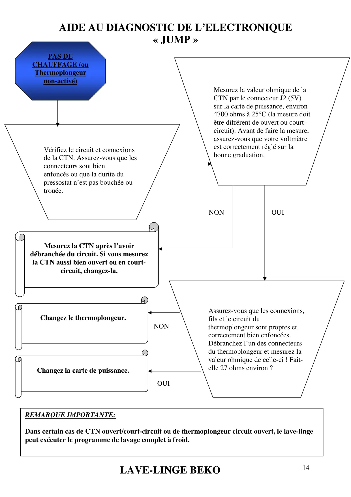
AIDE AU DIAGNOSTIC DE L’ELECTRONIQUE« JUMP »LAVE-LINGE BEKO14NONOUINONOUIPAS DECHAUFFAGE (ouThermoplongeurnon-activé)Vérifiez le circuit et connexionsde la CTN. Assurez-vous que lesconnecteurs sont bienenfoncés ou que la durite dupressostat n’est pas bouchée outrouée.Mesurez la valeur ohmique de laCTN par le connecteur J2 (5V)sur la carte de puissance, environ4700 ohms à 25°C (la mesure doitêtre différent de ouvert ou court-circuit). Avant de faire la mesure,assurez-vous que votre voltmètreest correctement réglé sur labonne graduation.Mesurez la CTN après l’avoirdébranchée du circuit. Si vous mesurezla CTN aussi bien ouvert ou en court-circuit, changez-la.Assurez-vous que les connexions,fils et le circuit duthermoplongeur sont propres etcorrectement bien enfoncées.Débranchez l’un des connecteursdu thermoplongeur et mesurez lavaleur ohmique de celle-ci ! Fait-elle 27 ohms environ ?Changez le thermoplongeur.Changez la carte de puissance.REMARQUE IMPORTANTE:Dans certain cas de CTN ouvert/court-circuit ou de thermoplongeur circuit ouvert, le lave-lingepeut exécuter le programme de lavage complet à froid.
14 / 16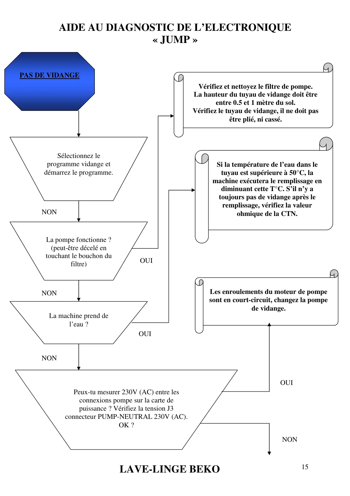
AIDE AU DIAGNOSTIC DE L’ELECTRONIQUE« JUMP »LAVE-LINGE BEKO15NONOUINONOUINONOUINONPAS DE VIDANGESélectionnez leprogramme vidange etdémarrez le programme.La pompe fonctionne ?(peut-être décelé entouchant le bouchon dufiltre)La machine prend del’eau ?Peux-tu mesurer 230V (AC) entre lesconnexions pompe sur la carte depuissance ? Vérifiez la tension J3connecteur PUMP-NEUTRAL 230V (AC).OK ?Vérifiez et nettoyez le filtre de pompe.La hauteur du tuyau de vidange doit êtreentre 0.5 et 1 mètre du sol.Vérifiez le tuyau de vidange, il ne doit pasêtre plié, ni cassé.Si la température de l’eau dans letuyau est supérieure à 50°C, lamachine exécutera le remplissage endiminuant cette T°C. S’il n’y atoujours pas de vidange après leremplissage, vérifiez la valeurohmique de la CTN.Les enroulements du moteur de pompesont en court-circuit, changez la pompede vidange.
15 / 16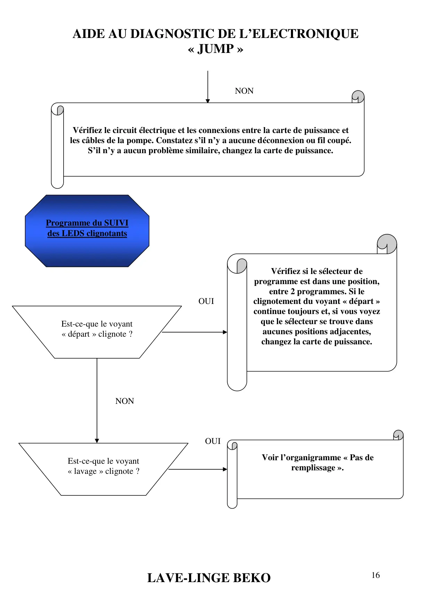
AIDE AU DIAGNOSTIC DE L’ELECTRONIQUE« JUMP »LAVE-LINGE BEKO16NONOUINONOUIVérifiez le circuit électrique et les connexions entre la carte de puissance etles câbles de la pompe. Constatez s’il n’y a aucune déconnexion ou fil coupé.S’il n’y a aucun problème similaire, changez la carte de puissance.Programme du SUIVIdes LEDS clignotantsEst-ce-que le voyant« départ » clignote ?Est-ce-que le voyant« lavage » clignote ?Vérifiez si le sélecteur deprogramme est dans une position,entre 2 programmes. Si leclignotement du voyant « départ »continue toujours et, si vous voyezque le sélecteur se trouve dansaucunes positions adjacentes,changez la carte de puissance.Voir l’organigramme « Pas deremplissage ».
16 / 16